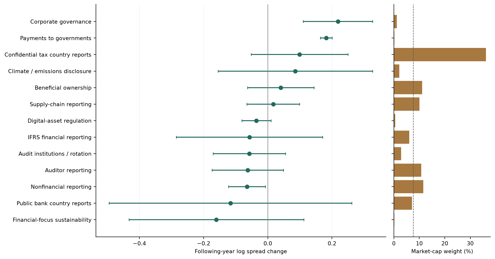
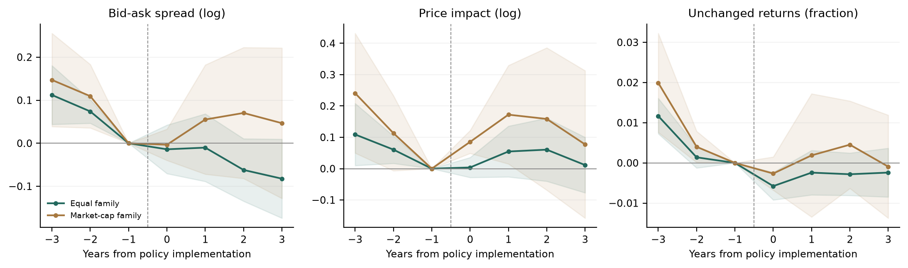

Policy diffusion
Reporting regulation across countries: liquidity, then policy adoption.
Sample and data
| Market data | Datastream, 2000–2025. 90 jurisdictions, 99,100 company records and 1,055,142 stock-year observations. |
|---|---|
| Liquidity sample | All three measures are available for 636,960 stock-years in 86 jurisdictions. Fixed company samples determine each country comparison. |
| Regulation | 17 policy families; 482 country-family histories. Public disclosure, confidential tax reporting and regulatory institutions are distinct. |
| Adoption data | Earlier adoption among trade and language peers, neighbours’ GDP growth, IMF credit and aid. |
We first ask whether trading improves around national implementation. We then ask which international connections are associated with adoption. These are country-level comparisons; company-specific legal coverage remains a separate extension.
1. Liquidity
For each policy and adoption cohort, we compare liquidity changes with countries whose documented adoption comes after the outcome window. Unknown histories and already-treated countries do not supply controls.
The main outcome is liquidity in the following year, relative to the year before implementation. We weight countries by prior-year GDP, then combine regulation families with equal weights or sampled pre-implementation market-cap weights.
| Window and outcome | Equal family Estimate [95% interval] | Market-cap family Estimate [95% interval] |
|---|---|---|
| Year 1: 13 families Bid-ask spread (log) | +0.007 [-0.039, +0.052] | +0.018 [-0.050, +0.087] |
| Year 1: 13 families Price impact (log) | +0.027 [-0.048, +0.101] | -0.025 [-0.189, +0.139] |
| Year 1: 13 families Unchanged returns (fraction) | -0.0021 [-0.0062, +0.0019] | +0.0037 [-0.0063, +0.0137] |
| Years 1-3: 10 families Bid-ask spread (log) | -0.022 [-0.091, +0.047] | +0.072 [-0.110, +0.254] |
| Years 1-3: 10 families Price impact (log) | +0.082 [-0.005, +0.169] | +0.127 [-0.095, +0.350] |
| Years 1-3: 10 families Unchanged returns (fraction) | -0.0035 [-0.0097, +0.0026] | -0.0003 [-0.0145, +0.0139] |
95% conditional country intervals. Higher outcomes indicate lower liquidity. Year −1 is the baseline. All 12 principal tests fail to reject zero after adjustment for multiple comparisons. Different horizons have different support.
The following-year spread estimates are close to zero and imprecise under both weights. The longer-window point estimates differ more, but their formal difference is also imprecise. The data do not establish one common liquidity gain across these policies.

Weights change the economic average. Confidential tax country reporting receives 36.1% of market-cap weight, compared with 7.7% under equal weights; auditor reporting receives 10.8%. Confidential reports go to tax authorities, so their information channel differs from public investor disclosure.

Liquidity differences appear before implementation. Other reforms, prior disclosure and coordinated laws limit a causal interpretation of the subsequent changes. This balanced event sample is smaller than the main sample.
Regulations across countries
| Regulation family | Adopting countries | Cohort years | Cohorts | Market-cap weight | Years 1-3 |
|---|---|---|---|---|---|
| Audit institutions / rotation | 4 | 2004-2007 | 3 | 2.9% | Yes |
| Auditor reporting | 20 | 2013-2016 | 2 | 10.8% | Yes |
| Beneficial ownership | 11 | 2016-2020 | 5 | 11.1% | Yes |
| Public bank country reports | 14 | 2014 | 1 | 7.1% | Yes |
| Confidential tax country reports | 42 | 2016-2019 | 4 | 36.1% | Yes |
| Public multinational country reports | - | - | - | - | No |
| Climate / emissions disclosure | 2 | 2013-2023 | 2 | 2.2% | Yes |
| Sectoral climate rules | - | - | - | - | No |
| Digital-asset regulation | 2 | 2018-2020 | 2 | 0.6% | Yes |
| Nonfinancial reporting | 22 | 2002-2017 | 9 | 11.5% | Yes |
| Payments to governments | 1 | 2014 | 1 | 0.2% | No |
| Corporate governance | 5 | 2001-2003 | 3 | 1.2% | No |
| IFRS financial reporting | 20 | 2005-2010 | 5 | 6.1% | Yes |
| Supply-chain reporting | 4 | 2012-2019 | 4 | 10.0% | Yes |
| Financial-focus sustainability | 1 | 2024 | 1 | 0.2% | No |
| Sustainability frameworks | - | - | - | - | No |
| Electronic financial reporting | - | - | - | - | No |
Supported national implementation cohorts only; future schedules are excluded. A dash means no supported comparison. Company eligibility is not established by country assignment.
The calendar records documented reporting phases. It does not claim the first existence of every duty. Complete E, S and G mandates are benchmarked separately against the dates in Krueger et al.; E-only climate rules remain distinct.
2. Policy diffusion
Competition asks whether countries follow trade peers. Learning asks whether neighbours’ earlier economic outcomes matter. Emulation asks whether countries follow language peers. External finance measures IMF credit and aid relative to GDP.
Following the JIBS design, the main outcome is whether a policy is in place, with family and year effects. Signals are lagged and coordinated focal adoptions are excluded. Each pair of weighted models uses identical observations.
| Model and mechanism | Rows / countries / families | Equal family Odds ratio [95% interval] | Market-cap family Odds ratio [95% interval] |
|---|---|---|---|
| Separate: Competition | 1,122 / 40 / 7 | 0.60 [0.37, 0.99] | 0.69 [0.46, 1.03] |
| Separate: Learning | 2,674 / 55 / 8 | 1.02 [0.65, 1.62] | 1.23 [0.70, 2.14] |
| Separate: Emulation | 2,424 / 37 / 11 | Unstable fit | Unstable fit |
| Separate: External finance | 1,410 / 31 / 9 | Unstable fit | Unstable fit |
| Joint: Competition | 90 / 15 / 1 | 0.62 [0.28, 1.36] | 0.62 [0.28, 1.36] |
| Joint: Learning | 90 / 15 / 1 | 3.04 [0.60, 15.41] | 3.04 [0.60, 15.41] |
| Joint: Emulation | 90 / 15 / 1 | 1.13 [0.57, 2.26] | 1.13 [0.57, 2.26] |
| Joint: External finance | 90 / 15 / 1 | 0.70 [0.48, 1.03] | 0.70 [0.48, 1.03] |
Odds ratios with 95% country-clustered intervals; above one means a positive association. Competition and emulation: 10 percentage points of peer adoption; learning: binary; external finance: one percentage point of GDP. An unstable fit is withheld, not a zero.
The separate competition and learning tests retain broader coverage. Combining all four mechanisms leaves confidential tax country reporting in 15 countries, so the two weights coincide. That joint sample cannot establish a global diffusion mechanism. None of the principal associations survives adjustment for eight comparisons.
Paper and appendix
Paper ↗ · Data tables and code ↗ · Manuscript ↗
All 1,296 liquidity specifications
The grid varies the policy clock, outcome, country and family weights, horizon, policy group, coordinated adoptions and controls. These choices were declared after earlier results were known; the exercise is retrospective.

837 estimates are negative and 459 positive; 40 pass the grid-wide Holm correction. Correlated fits are not independent confirmations. Selecting the significant cells would not establish a general effect.
Complete grid · Every family contribution · All family fits and unsupported comparisons · Analysis choices and addenda · Leave-one-family-out and constant-dollar weights · Formal weight comparisons
Adoption dates, source reviews and scope
The register contains 482 distinct country-family histories. Actual company filing dates are not recorded in this global calendar. Covered financial periods, implementation and first public information are different dates.
UK extended audit reporting uses the 2013 information-policy year while retaining the 2012 covered-period start. The reviewed ESG calendar differs from the supplied Krueger calendar in 25 of 31 overlapping dated countries, often because it records a later phase. Those differences are not all proven legal errors. The published complete-topic ESG calendar is benchmarked separately through 2020; its missing or later histories are not extended as permanent nonadoption.
Confidential country reports are filed with tax authorities and exchanged between them. Public bank and public multinational country reports disclose specified country information publicly. They remain separate policy families. US domestic beneficial-ownership observations and German supply-chain observations with endpoints in 2025 are conservatively censored where histories change or reporting enforcement is uncertain; this is not a claim that all German due-diligence duties ended.
Reviewed calendar · Date audit · ESG calendar comparison · Preserved source manifest · Company source reviews · Regulation records and sources
Reference-paper methods and benchmarks
The main liquidity comparison uses following-year outcomes, as in Krueger et al. The separate published-calendar benchmark also reports country/year regressions and domestic controls. Country averages cannot reproduce their firm effects, industry-year effects or firm financial controls. Annual country composition can change in the level regressions.
The JIBS adaptation uses adoption status and year effects, corrects learning when none or all neighbours have adopted, and reports separate and joint mechanisms. The main geographic network selects ten nearest countries with documented histories; strict world neighbours remain a sensitivity. Language peers are a proxy for the original cultural-distance measure. No comparable ordinal adoption scale is invented across the 17 families.
Method comparison · Published ESG calendar: cohort comparisons · Published ESG calendar: country/year regressions · All diffusion fits and failures · Diffusion weights · Geographic peer coverage · Domestic controls
Measurement and inference
One pre-policy share line per vendor company is held fixed within each cohort. All three measures must be observed. Countries need at least 30 complete companies and cohorts need three comparison countries. Company daily measures require the valid-day thresholds in the code; zero returns are measured among observed valid days.
GDP weights and pre-policy market values are positive and normalised. Across-family market-cap mass sums supported adopting-company exposures over cohorts; companies may appear under several families. Complete outcome requirements affect membership, so these weights are not a fully predetermined world-market portfolio.
Country uncertainty is conditional on recorded policy histories. Few treated countries, coordinated waves, overlapping reforms and incomplete earliest-law histories limit policy inference. The appendix retains all signs, failed fits and pre-policy differences. A pooled one-factor illiquidity fit hit a boundary and is withheld rather than replaced by an index chosen for its result.
Outcome coverage · Family estimates and intervals · Event profiles · Joint pre-policy diagnostics · Factor measurement diagnostics
Company studies and earlier evidence
Company-specific studies supplement the global country analysis. Their selected-company estimates do not enter the headline pool. Global historical company eligibility remains incomplete; the recovered Worldscope financial export contains US records only.
Company-study appendix · Global eligibility audit · Jurisdiction sources · Worldscope coverage
References
Krueger, Sautner, Tang and Zhong (2023), The Effects of Mandatory ESG Disclosure Around the World, supplied working paper.
Koning, Mertens and Roosenboom (2018), Drivers of institutional change around the world: The case of IFRS, supplied JIBS article.